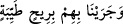
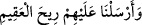
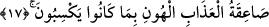
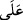

Kerim’de müfred olarak geçen (__WORD__) rüzgâr lafzı, (__WORD__) örneğinde olduğu
gibi ‘rahmet’ anlamında kullanılıyorsa da genelde ‘azap’ mânâsındadır; meselâ:
(__WORD__) (Fussilet 41/16) ve (__WORD__) (Zâriyât 51/41). Buna
karşılık, çoğul olarak ‘riyâh’ şeklinde geçen rüzgârların tamamı ‘rahmet’ anlamındadır.
Hz. Peygamber rüzgâr estiği, gök gürleyip şimşek çaktığı zaman: “Allahım! Öfkenle
bizleri öldürme, azâbınla helâk etme; bundan evvel bizlere âfiyet ver.”[33] dermiş.
Bir hadiste şöyle buyrulur: “Rüzgâra sövmeyiniz; sizi endişelendiren bir tabiat olayı
gördüğünüzde şöyle deyiniz: Allahım! Senden bu rüzgârdan ve içindekilerden hayır
kaynaklanmasını ve emrettiklerinin hayırlısını isterim; bu rüzgârdan ve
içindekilerden şer kaynaklanmasından ve emrettiklerinin şerrinden Sana
sığınırım.”[34] el-Mesâbîh’te de bu şekilde geçmektedir.
Sarsar rüzgârı, ejderhâ nefesinin esintisidir. Kalp ondan ıstırap duyar ve hîlelerine
kapılır. Kim din husûsunda sağlam durup ahdine vefa gösterirse, Allah da onu zemin
(yer) gibi sağlam yapar.
17. Semûd’a gelince onlara doğru yolu gösterdik, ama onlar körlüğü doğru yola
tercih ettiler. Böylece yapmakta oldukları kötülükler yüzünden alçaltıcı azâbın
yıldırımı onları çarptı.
“Semûd” kabîlesine “gelince;” ‘Kabîlesi’ te’vîlinin de gösterdiği üzere, Semûd
kelimesi hem isim hem de müennes olduğu için gayr-ı munsariftir. Kelimeyi tenvinli
okuyarak munsarif kılanlar ise kabîlenin ilk atası olan şahsın özel ismini göz önünde
tutmuş olmaktadırlar.
“Onlara doğru yolu gösterdik,” Buradaki hidâyet matlûba ulaştıracak yolu sadece
göstermek olup kişinin bu yolu izleyip izlemediğini ifâde etmez. “Şüphesiz sen
dosdoğru bir yola iletiyorsun.” (eş-Şûrâ 42/52) âyetindeki hidâyet gibi değildir;
“Allah inkârcı bir gürûhu doğru yola iletmez.” (el-Bakara 2/264) âyetindeki gibi
‘istenilen şeye ulaştırıcı olmakla tavsif edilemez. Mânâ şudur: Birtakım tekvinî deliller
dikmek, peygamber göndermek ve âyet-i kerîmeler indirmek sûretiyle onlara doğru yolu
gösterdik, bir bütün olarak kendilerine merhamet eyledik;
“Ama onlar, körlüğü doğru yola tercih ettiler.” (__WORD__)’ın hakîkat anlamı, kişinin
bir şeyde onu sevecek hususlar aramasıdır. (__WORD__) ile müteaddî olmasını gerektiren, tercih
ve yeğleme mânâsıdır. el-Müfredât’ta da bu şekilde geçer. ‘Kalp gözleri kör olduğu;
hatta hiç olmadığı için dalâleti hidâyete, inkârı îmâna, mâsiyeti tâate yeğlediler’
demektir.